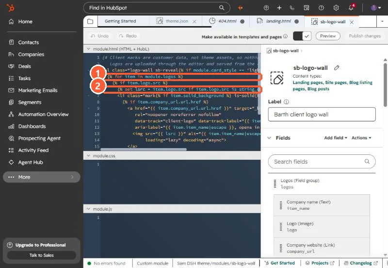

Short answer
HubSpot's loop docs say any variables defined within loops are limited to the scope of that loop. So {% set has_logos = true %} inside the loop does not change the has_logos you set before it. The pattern in HubSpot's variables docs is to create a dict outside the loop and change it with {% do obj.update({...}) %}. For my logo wall I skipped HubL and hid the empty list with CSS.
1. The code that did nothing
My logo wall module renders a list of client logos. Editors can leave it empty, and an empty list still drew a bordered box. My first fix:
{% set has_logos = false %}
{% for item in module.logos %}
{% if item.logo.src %}{% set has_logos = true %}{% endif %}
{% endfor %}
{% if has_logos %} ...the list... {% endif %}has_logos stayed false after the loop, so the list never rendered at all.


2. The rule
HubSpot's loop docs: variables defined within loops are limited to the scope of that loop and cannot be called from outside of it. You can read outer variables inside the loop, but a set inside creates a new one that disappears at endfor.
3. The pattern that carries a value out
HubSpot's variables docs show changing a dict defined outside the loop with do:
{% set state = {"found": false} %}
{% for item in module.logos %}
{% if item.logo.src %}{% do state.update({"found": true}) %}{% endif %}
{% endfor %}
{% if state.found %} ...the list... {% endif %}4. What I shipped instead
The goal was only to hide an empty box, so I removed the HubL guard and added one CSS rule to the theme stylesheet:
.logo-wall:not(:has(li)) { display: none; }It also covers an editor adding rows without picking images, because the loop skips those rows and the list ends up with no items.